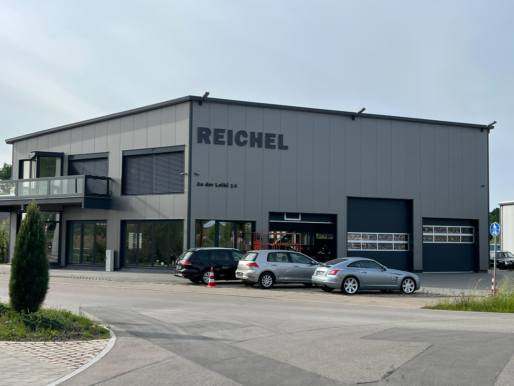
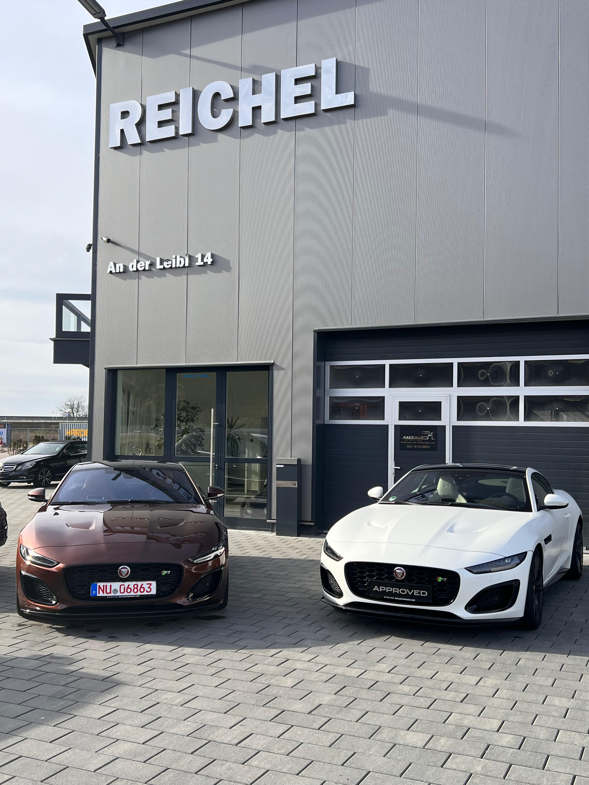
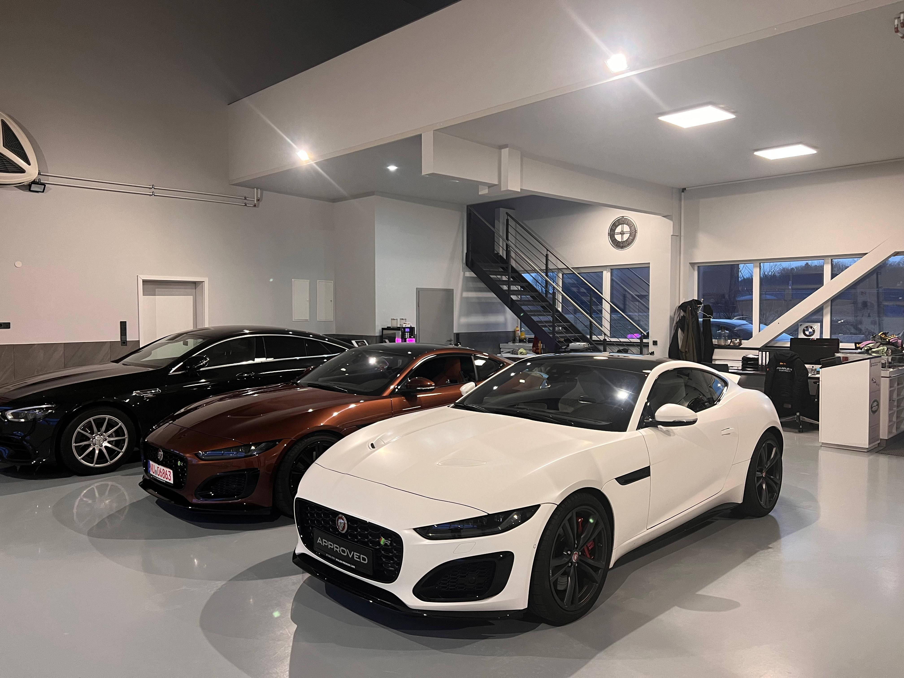

Moderne Räumlichkeiten für professionelle Fahrzeugbegutachtung in Nersingen
An der Leibi 14
89278 Nersingen
Mo - Fr: 08:00 - 17:30 Uhr
Sa: 08:00 - 15:00 Uhr
So: Geschlossen
Unser Büro liegt im Industriegebiet Nersingen, direkt an der B10
und in unmittelbarer Nähe zur Autobahn A7.
Gut erreichbar aus Ulm, Neu-Ulm und der gesamten Region.
Wir kommen zu Ihnen! Terminvereinbarung nach telefonischer Absprache.
Unser Sachverständigenbüro befindet sich zentral in Nersingen mit ausreichend Parkplätzen direkt vor dem Haus.

Modernste Ausstattung für präzise Fahrzeugbegutachtung

Professioneller Empfang und komfortable Kundenbereiche

Helle Räumlichkeiten für professionelle Fahrzeugbegutachtung
Unser modernes Sachverständigenbüro in Nersingen bietet ideale Voraussetzungen für präzise Gutachten. Mit großzügigen Werkstatträumen, modernster Messtechnik und einem angenehmen Empfangsbereich sind wir bestens ausgestattet.
Helle Werkstatthallen mit Hebebühnen und professioneller Ausstattung
State-of-the-art Prüf- und Messgeräte für präzise Gutachten
Angenehme Atmosphäre während der Begutachtung Ihres Fahrzeugs
Bequeme Stellplätze direkt vor unserem Büro
Diese Karte wird von Google Maps bereitgestellt. Durch das Laden der Karte werden Daten an Google übertragen.
Weitere Informationen in unserer Datenschutzerklärung.
Rufen Sie uns an oder schreiben Sie uns – wir sind schnell für Sie da.